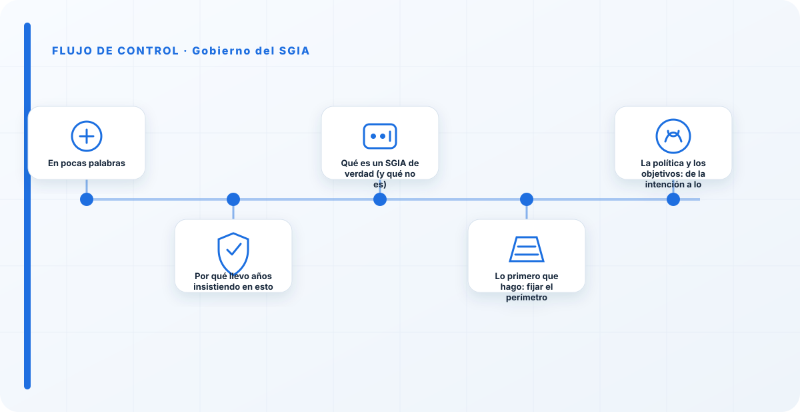
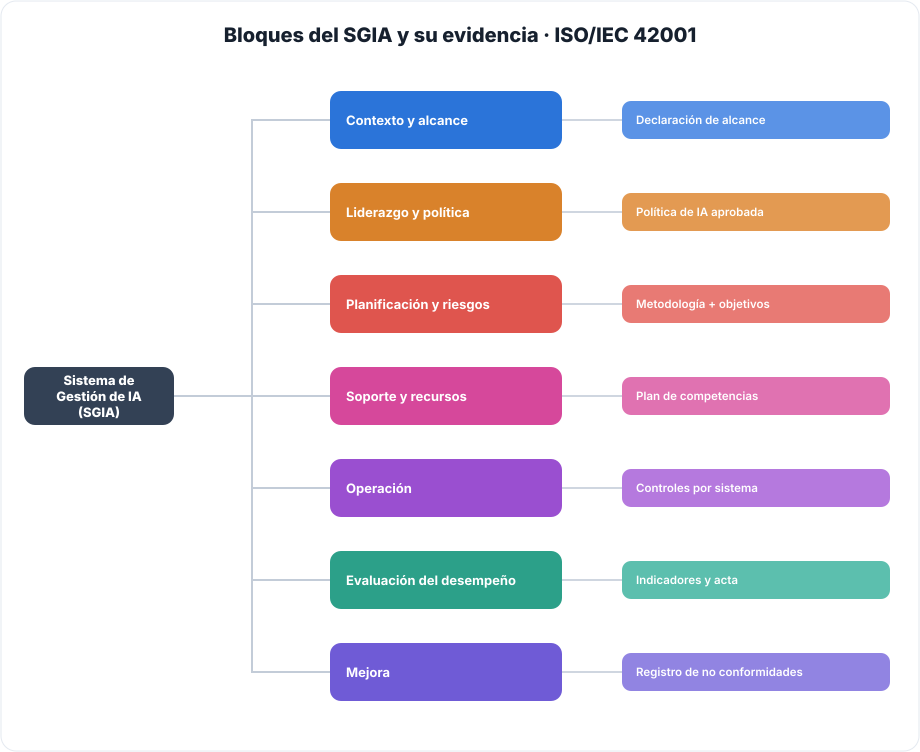
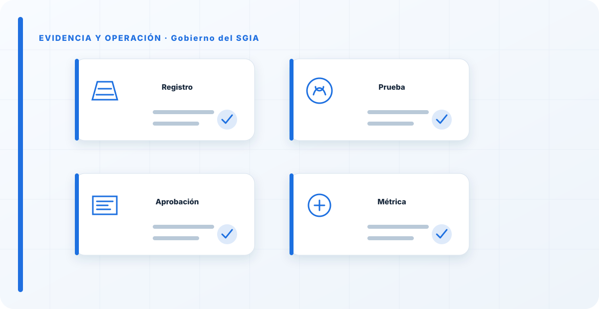

En pocas palabras
Para mí, un SGIA no es un archivador de documentos: es el sistema con el que una organización toma decisiones repetibles sobre su IA. Qué sistemas entran en alcance, quién acepta el riesgo, cómo se aprueban los cambios y qué evidencia demuestra que aquello funciona. Si tu gobernanza no cambia lo que se aprueba, quién asume el riesgo y qué se retira, no tienes gobierno: tienes papeleo. Todo lo que viene después lo escribo desde esa idea.
Por qué llevo años insistiendo en esto
Cuando entro en una organización, casi nunca me encuentro con que no hay IA. Me encuentro con que hay mucha más de la que creen: modelos embebidos en SaaS que nadie inventarió, gente pegando información en herramientas que descubrió por su cuenta, un par de pilotos que se quedaron en producción sin que nadie los aprobara formalmente. No es mala fe; es la velocidad. La IA entra por abajo, por el entusiasmo de quien la usa, y el gobierno —si llega— llega por arriba y tarde.
He visto lo que pasa cuando ese hueco no se cierra: decisiones que afectan a personas tomadas por un sistema que nadie sabe explicar, datos confidenciales que salieron de la organización sin que quedara rastro, y comités que se enteran de un incidente por la prensa. Y también he visto lo contrario: organizaciones que no son más lentas por tener gobierno, sino más rápidas, porque la gente sabe qué puede hacer sin pedir permiso y qué tiene que pasar por un comité. El SGIA es la herramienta que te lleva del primer escenario al segundo. No va de frenar la IA; va de poder usarla sin sustos.
Qué es un SGIA de verdad (y qué no es)
Un SGIA es un sistema de gestión, con la misma lógica que un SGSI de seguridad o un sistema de calidad: un conjunto de políticas, roles, procesos y controles que trabajan juntos para conseguir un objetivo y mejorar con el tiempo. En el caso de la IA, el objetivo es que cada sistema que la organización construye o usa sea seguro, legal, supervisado y trazable a lo largo de toda su vida.
Lo que no es, y aquí es donde fallan la mayoría: no es una política colgada en la intranet que nadie lee. No es un Excel de riesgos que se rellenó una vez para una auditoría. No es un comité que se reúne para aprobar lo que ya está en producción. Todo eso son artefactos aislados. Un SGIA los conecta: la política fija los principios, los roles dicen quién decide, el proceso lleva cada sistema por unas puertas de aprobación, los controles dejan evidencia, y la revisión por la dirección cierra el bucle. Cuando falta esa conexión, tienes documentos; cuando está, tienes gobierno.
La prueba del algodón que uso siempre: pídele a alguien que te enseñe la última decisión que su SGIA bloqueó o corrigió. Un sistema que se paró porque no pasó un control, un despliegue que se retrasó hasta cerrar un riesgo, un uso que se prohibió. Si no hay ninguna, por muchos documentos que haya, el sistema de gestión todavía no está vivo.

Lo primero que hago: fijar el perímetro
Antes de escribir una sola política, delimito el alcance. Es el paso más aburrido y el que más gente se salta, y luego lo pagan. Definir el perímetro es decidir, y dejar escrito, qué unidades de negocio, qué procesos, qué sistemas de IA, qué proveedores y qué ubicaciones entran dentro del SGIA. Y, tan importante como eso: qué queda fuera y por qué.
Insisto en las exclusiones justificadas porque es donde se esconden los problemas. Excluir un área "porque es pequeña" o "porque eso lo lleva otro" sin argumentarlo es la forma más habitual de dejar fuera precisamente lo que más riesgo tiene. Cuando reviso un alcance, lo que miro no es lo que está dentro, sino lo que está fuera: ahí es donde suelen estar las sorpresas. Un buen documento de alcance me permite responder, en cualquier momento, a "¿este sistema de IA está gobernado o no?", sin ambigüedad.
En la práctica, el alcance no es un documento que se firma y se olvida. Cada vez que aparece un uso nuevo de IA —y aparecen constantemente— hay que decidir si entra o no, y por qué. Ese hábito, el de clasificar cada uso nuevo dentro o fuera con una razón, es lo que mantiene el perímetro vivo en lugar de convertirlo en una foto caducada.
La política y los objetivos: de la intención a lo medible
Con el perímetro claro, traduzco la estrategia en compromisos. La política de IA es donde la organización dice, con su nombre, qué principios va a respetar: supervisión humana, transparencia, no discriminación, seguridad y cumplimiento legal. Hasta aquí, casi todas las políticas se parecen. La diferencia entre una que sirve y una decorativa está en si esos principios se convierten en objetivos medibles.
"Queremos una IA responsable" no es un objetivo, es un deseo. "Todo sistema de IA de alto riesgo tiene una evaluación de impacto antes de desplegarse, y lo medimos cada trimestre" sí lo es: tiene un qué, un umbral, un propietario y un plazo. Cuando ayudo a redactar la política, dedico el tiempo justo a los principios —que son bastante universales— y casi todo el esfuerzo a bajar cada principio a un objetivo que alguien pueda cumplir o incumplir. Un principio que nadie puede incumplir porque no dice nada concreto no protege nada.
Y hay una política concreta que, en mi experiencia, marca la diferencia práctica más que ninguna otra: la de uso de IA, la que le dice al empleado qué puede hacer y qué no. Esa es la que la gente lee de verdad, y la que evita la mayoría de los incidentes cotidianos.
No creo un sistema paralelo: lo conecto
El error más caro que veo es montar el SGIA como una isla. Un equipo nuevo, un repositorio nuevo de documentos, un proceso de aprobación propio que no habla con nada de lo que ya existe. El resultado es un sistema de gestión que la organización percibe como una carga añadida, que compite con los procesos reales y que, en cuanto baja la presión de la certificación, se queda parado.
Yo lo integro. El riesgo de IA entra en el mapa de riesgo corporativo, no en uno aparte. La evaluación de impacto se apoya en el proceso de privacidad que ya existe. Los controles de seguridad de los sistemas de IA los lleva el equipo de seguridad, no un equipo nuevo. Las compras de herramientas de IA pasan por el proceso de compras, con un criterio añadido. El desarrollo de sistemas de IA usa el ciclo de desarrollo que ya hay, con unas puertas extra. La auditoría interna incluye la IA en su programa. Cuando el SGIA se apoya en lo que la organización ya sabe hacer, deja de ser una carga y pasa a ser una capa; y las capas se sostienen, los sistemas paralelos se abandonan.
Los bloques que tiene que cubrir (mapa a ISO/IEC 42001)
ISO/IEC 42001 sigue la estructura común de todos los sistemas de gestión, así que la uso como lista de comprobación de que no me dejo nada. Estos son los bloques que un SGIA tiene que cubrir y, para cada uno, el artefacto que me demuestra que existe de verdad y no solo sobre el papel. Cuando reviso un SGIA, recorro esta tabla: si un bloque no tiene su artefacto, ese bloque está solo empezado.
| Bloque | Qué resuelve | Artefacto que lo demuestra |
|---|---|---|
| Contexto y alcance | Qué sistemas, unidades, proveedores y ubicaciones entran; qué se excluye y por qué. | Declaración de alcance con exclusiones justificadas. |
| Liderazgo y política | Compromiso de dirección y política de IA con principios medibles. | Política de IA aprobada y comunicada. |
| Planificación y riesgos | Cómo se identifican, evalúan y tratan riesgos e impactos de la IA. | Metodología de riesgos e impactos + objetivos con plazo. |
| Soporte y recursos | Competencias, formación, concienciación y recursos asignados. | Plan de competencias y registro de formación. |
| Operación | Controles aplicados al ciclo de vida de cada sistema de IA. | Controles operativos y su evidencia por sistema. |
| Evaluación del desempeño | Medición, auditoría interna y revisión por la dirección. | Indicadores, informes de auditoría y acta de revisión. |
| Mejora | No conformidades, correcciones y mejora continua. | Registro de NC con verificación de eficacia. |
Que quede claro: mapear a la norma no es el objetivo, es el andamio.
Y lo mismo en forma de árbol, que es como lo tengo en la cabeza cuando reviso si un SGIA está completo:

El objetivo es que la organización decida bien sobre su IA. La norma solo me ayuda a no olvidarme de una pata.
El PDCA, pero de verdad
El ciclo planificar–hacer–verificar–actuar suena a diapositiva de consultora, y muchas veces se queda en eso. Yo lo trato como lo que es: la mecánica que mantiene el SGIA vivo. Planificar es decidir qué controles se aplican, a qué sistemas y quién los opera, con fechas. Hacer es aplicarlos de verdad en la operación, no describirlos en un documento. Verificar es medir si están funcionando —con indicadores, con auditoría, con evidencia real— en lugar de asumir que sí. Y actuar es corregir lo que se desvía, con un responsable y un plazo, y comprobar después que la corrección funcionó.
El punto donde casi todos se caen es el "verificar". Es cómodo planificar y hacer; medir si aquello sirve es incómodo, porque a veces la respuesta es que no. Pero un SGIA que no mide es fe, no gestión. Prefiero un ciclo pequeño que se cierra de verdad —pocos controles, bien medidos y corregidos— que un plan enorme que nunca llega a la fase de verificar.
La revisión por la dirección: donde se ve si esto es serio
La revisión por la dirección es la reunión donde la organización demuestra si el gobierno de IA le importa o no. No es un trámite para el auditor. Es el momento en que la dirección mira el desempeño real: qué incidentes ha habido, qué riesgos han cambiado, qué recursos hacen falta, qué decisiones hay que tomar. Y, sobre todo, deja constancia de esas decisiones.
Cuando participo en una de estas revisiones, lo que busco es que salgan decisiones, no que se lea un informe. Aprobar recursos, aceptar o rechazar un riesgo, priorizar una mejora, parar algo. Un acta de revisión que solo dice "se informó de X" no vale; una que dice "se decidió Y, responsable Z, para tal fecha" es la prueba de que el bucle se cierra en lo más alto. Ese es el eslabón que convierte todo lo anterior en un sistema, y no en un conjunto de buenas intenciones documentadas.

Cómo mido la madurez
Uso esta escala para situar a una organización sin adornos y sin dramatizar. No se trata de estar en el nivel 4 mañana; se trata de saber en qué punto estás de verdad y de que no haya sorpresas. La mayoría de las organizaciones con las que trabajo empiezan entre el 1 y el 2, y eso está bien: lo importante es reconocerlo y tener un plan para subir.
| Nivel | Situación | Qué lo caracteriza |
|---|---|---|
| 0 · Ausente | Sin gobierno | IA en uso sin política, alcance ni responsable. Decisiones ad hoc. |
| 1 · Inicial | Reactivo | Alguna política suelta, sin conexión con la operación ni evidencia. |
| 2 · Definido | Documentado | Alcance, política, roles y comité definidos, pero aplicados de forma desigual. |
| 3 · Gestionado | Medido | PDCA operando, con objetivos, indicadores y revisión por la dirección. |
| 4 · Optimizado | Continuo | Gobierno integrado con riesgo, privacidad y seguridad; mejora continua con evidencia. |
Los controles que no pueden faltar
| Control | Objetivo concreto | Evidencia |
|---|---|---|
| Mapa del SGIA | Relacionar procesos, responsables, entradas, salidas y controles del sistema de gestión. | Mapa de procesos y alcance aprobado. |
| Objetivos medibles | Convertir la política en metas con indicadores, propietario y plazo. | Cuadro de objetivos y seguimiento. |
| Gestión de no conformidades | Registrar causa, corrección, acción correctiva y verificación de eficacia. | Registro de NC y evidencias de cierre. |
| Revisión por la dirección | Asegurar decisiones documentadas sobre recursos, riesgos y mejora. | Acta formal de revisión. |
Los errores que veo una y otra vez
No son teóricos; son los que me encuentro en cliente tras cliente.
- Documentar sin conectar con la operación. Un SGIA precioso sobre el papel que nadie usa en el día a día. Es el más común y el más inútil.
- Excluir áreas críticas sin justificación. Dejar fuera lo incómodo "por ahora" y que ese "por ahora" se vuelva permanente.
- Medir actividad en lugar de resultado. Contar cuántas políticas se han escrito en vez de cuántas decisiones ha corregido el sistema.
- Montar un sistema paralelo que compite con los procesos reales y se abandona en cuanto baja la presión.
- Una revisión por la dirección que solo informa y no decide nada. El bucle queda abierto por arriba.
Cómo sé que un SGIA funciona (mis indicadores)
Cuando quiero saber si un gobierno de IA está vivo, no cuento documentos. Miro cosas como estas: qué porcentaje de los sistemas de IA en uso están realmente dentro del alcance y no en la sombra; cuántas decisiones ha tomado el comité que hayan cambiado algo (aprobar, parar, corregir); cuántas no conformidades se han cerrado con verificación de que la corrección funcionó; y cuánto tarda un uso nuevo de IA en pasar por su puerta de aprobación. Si esos números se mueven, el sistema respira. Si están planos o vacíos, por mucha carpeta que haya, todavía no hay gobierno.
Checklist práctica
- Existe una declaración de alcance vigente, con exclusiones justificadas.
- Hay una política de IA aprobada con objetivos medibles.
- El SGIA está conectado con riesgo, privacidad, seguridad y compras, no en paralelo.
- Existe un mapa de procesos del SGIA.
- El PDCA se cierra: se mide y se corrige, no solo se planifica.
- Hay un programa de auditoría y una revisión por la dirección que decide.
Referencias y marcos relacionados
Contenido educativo y técnico. No sustituye asesoramiento jurídico ni una auditoría formal. Conserva únicamente la evidencia necesaria, con acceso restringido, versión y fecha.